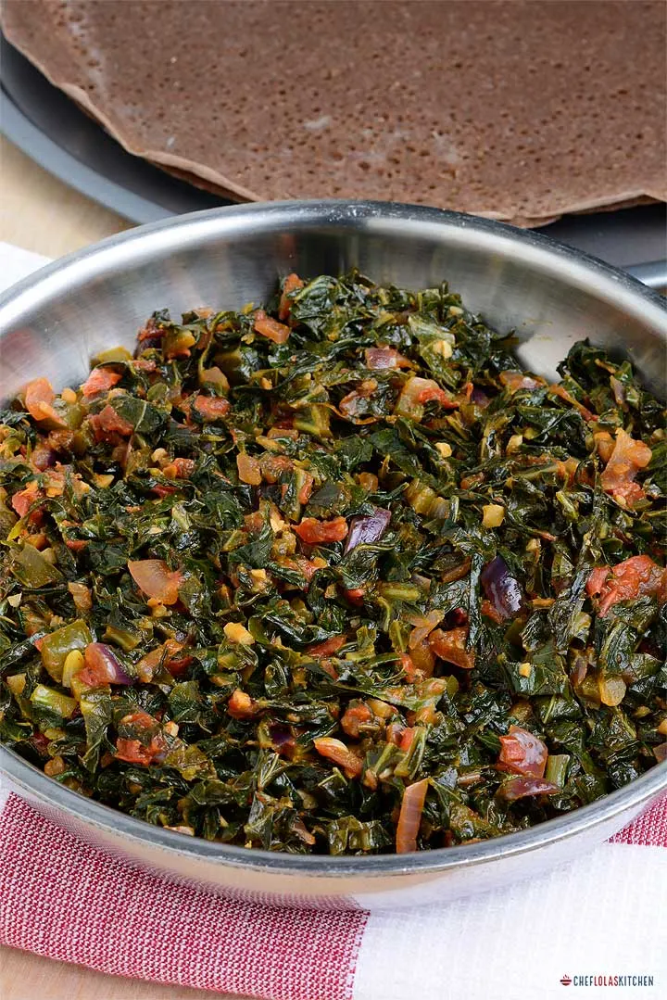

GOMEN

Description
Gomen Wat is a mainstay in any Ethiopian kitchen.
It is hearty yet light and goes with just about everything as a side dish!
If you’re looking for a way to spice up your greens,
this is one recipe you’ll want to add to your repertoire.
Ingredients
- 1 pound collard greens - rinsed, trimmed and chopped
- 2 cups water
- 1 tablespoon olive oil
- ¾ cup chopped onions
- 8 cloves garlic, chopped
- 1 tablespoon olive oil
- 1 ½ cups sliced green bell pepper
- 1 tablespoon fresh lemon juice
- 1 teaspoon salt
- ½ teaspoon ground turmeric
- ½ teaspoon paprika
- ½ teaspoon ground allspice
- 2 tablespoons minced fresh ginger root
Steps
- In a large skillet, add the onion, tomatoes and garlic, and salt.
Cook until the moisture is absorbed.
About 5 minutes.
-
Add the oil minced ginger, garlic, paprika, cumin, cardamom, and saute for about a minute.
-
Stir in the collard greens and cook on medium heat until the collard greens become softened and most of the water evaporates.
About 10 to 15 minutes.
Adjust the seasoning if necessary.
-
Serve over injera